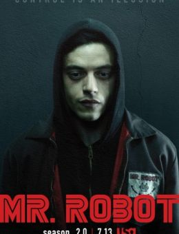
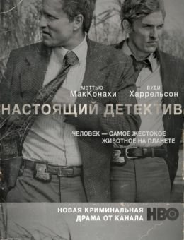
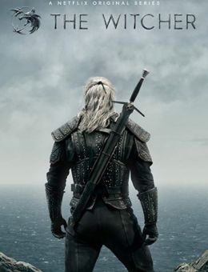
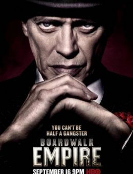
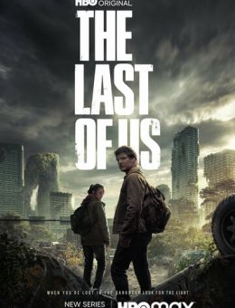
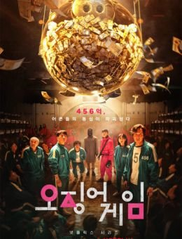
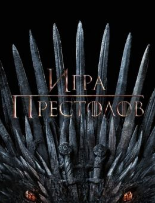
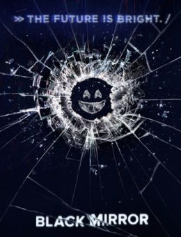

Серіали
-

Містер Робот
2015жанр: трилер, драма, кримінал
Історія молодого програміста Елліота, який страждає на соціофобію і вирішив, що єдиний прийнятний для нього спосіб взаємодії з людьми – це професія хакера.
-

Справжній детектив
2014жанр: детектив, кримінал, трилер, драма
У Луїзіані 1995 року відбувається дивне вбивство дівчини. У 2012 році справа про вбивство 1995р. повторно відкривають, оскільки сталося подібне вбивство. Щоб краще просунутися у розслідуванні, поліція вирішує допитати колишніх детективів, які працювали над справою 1995р.
-

Відьмак
2019жанр: фентезі, бойовик, драма, пригоди
Серіал Відьмак розповідає про повну небезпеку та пригод життя борця із чудовиськами. Геральт пройшов серйозну школу Каєр Морен, де виживає не кожен учень. Він невтомний і спритний, що допомагає у його непростому ремеслі.
-

Підпільна імперія
2010жанр: драма, кримінал
1920 рік. Через кілька годин Атлантик-Сіті – столиця розваг та пороку, як і вся Америка, вступить в епоху «Сухого закону». Енох «Накі» Томпсон, вдень – міський скарбник, а вночі – хитромудрий гангстер зі зв'язками на самому «горі», вирішує скористатися ситуацією та отримати нечувані прибутки на підпільній торгівлі алкоголем. Однак не він сам хоче збагатитися на новому промислі...
Перейти -

Одні із нас
2023жанр: жахи, фантастика, бойовик, драма
В основі майбутньої картини лежить сюжет про черговий зомбі-апокаліпсис. Вдихаючи суперечки гриба, що мутував, американці перетворюються на небезпечних створінь. Через 20 років сильна державає сумним видовищем. У країні процвітаютьмародерство та канібалізм.
-

Гра в кальмара
2021жанр: трилер, драма
Сон Гі-хун уже немолодий, розлучений, по вуха загруз у боргах і сидить на шиї у старенької матері. Навіть виграні на стрибках гроші в його руках довго не затримуються, і одного разу він зустрічає в метро загадкового незнайомця, який спочатку пропонує зіграти в дитячу гру, а потім вручає Гі-хуну чималу суму та візитку.
-

Гра престолів
2011жанр: фентезі, драма, бойовик
Всі завмерли в очікуванні великих баталій, проте затята смута не розгорілася. Володарка продовжує вести боротьбу з Королем Ночі, попереду на армію не чекають перешкоди, але сили виїдено зсередини. Окрилено-дивні воїни втратили запал, щось сталося з вірою у перемогу, картина Гра престолів покаже, що відбуватиметься у світі, доведеному до страшних руйнувань.
-

Чорне дзеркало
2011жанр: трилер, драма, фантастика
За останні десять років технології всебічно змінили наше життя, перш ніж ми встигли схаменутися і засумніватися в них. У кожному будинку, на кожному столі, на кожній долоні – плазмовий телевізор, монітор комп'ютера, дисплей смартфона – чорне дзеркало нашого існування у двадцять першому столітті.